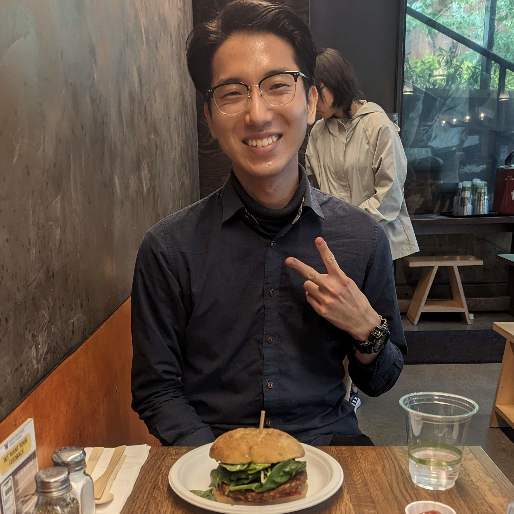
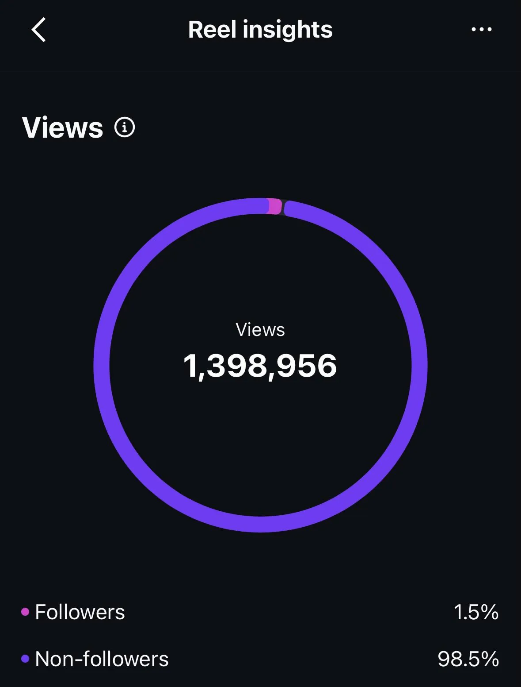
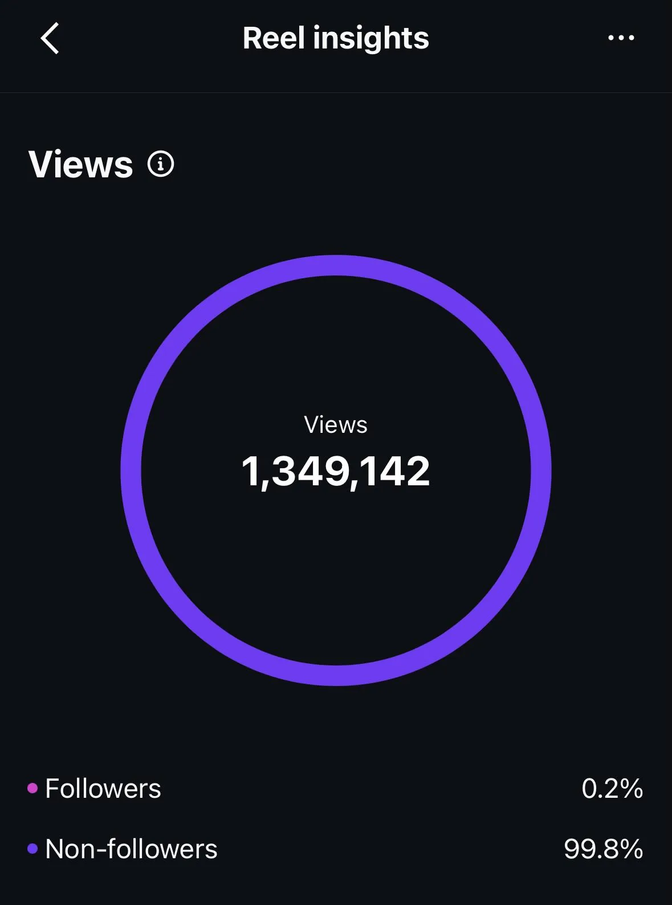

Attention is
not the goal.
Viral videos, clinic marketing, and AI-music outreach taught me to look beyond views toward outcomes that actually matter.
Two Reels broke a million views. Neither made me money.
I made approximately 100 Instagram Reels, learning from internet trends, cultural humor, and the kinds of stories that people share. Two videos reached more than a million views. My featured videos were later reported at approximately 3.6 million and 1.3 million views.

I wrote about this experience on Threads because the honest lesson mattered more than the numbers: these viral videos generated no direct revenue for me.
Most views came from people who didn't follow me.


The screenshots document historical reach beyond my follower base. They are not live verification of the later 3.6M claim, nor do they independently establish follower conversion or revenue.
Making marketing useful for a real business.
In 2026, I began managing social content for my family's medical clinic, Miraeyeonhap Clinic, across Threads, Instagram, and Naver Blog.
During a 30-day period in July–August 2026, our Threads content accumulated approximately 258,000 views. Some patients later said they had found the clinic through online content, including searches related to hypertension and weight management.
That experience helped me think about a more meaningful outcome than impressions: whether communication helps the right person discover a useful service. I cannot attribute every patient visit to a particular post.
A clinic website, rebuilt with Claude Code.
Since submitting my HAA application, I rebuilt Namwon Miraeyeonhap Clinic’s website using Claude Code.
The previous website cost KRW 360,000 every two years. Rebuilding it myself brought the ongoing cost to approximately KRW 20,000 per year—about 89% lower on an annual basis.
Getting people curious about making music with AI.
As a volunteer University Growth Specialist for Suno, I introduced AI music creation to students and creators. One English-language street-interview video I created for Suno's Instagram reached more than 10,000 views.
This was an early opportunity to see the possibility of AI in music from the creator-adoption side, not just the production side.
Distribution is a skill. Understanding value is another.
Music taught me to ship. Short-form content taught me to reach people. Healthcare marketing challenged me to connect communication to actual outcomes.
I'm using this experience as the starting point for a narrow music-growth prototype, Sibyl.